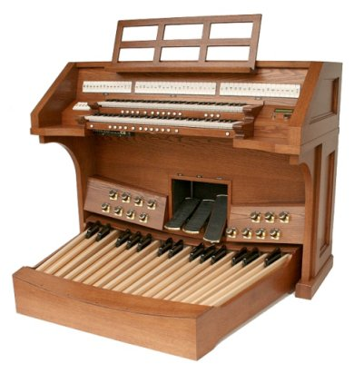

|
|
|
Samples of the Phoenix Organ PT246 These are a few pieces recorded from the Phoenix PT246. Most are recorded on Spec 1, the English/American stoplist, but please note the Pie Jesu recorded on the French Spec 3 using the Valotti Temperment.   |

WEBSITE
CONTENTS COPYRIGHT© 2007 - DL SIMMONS & COMPANY CHURCH
ORGANS